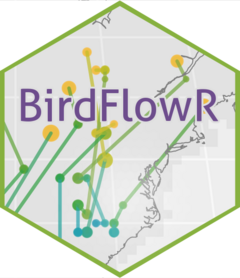

Subset Routes, BirdFlowRoutes, or BirdFlowIntervals objects by row
Source: R/subset_routes.R
subset_routes.Rd[ methods for row-subsetting Routes, BirdFlowRoutes,
and BirdFlowIntervals objects. Subsetting works on the underlying data
component, with the rest of the object (species, metadata, geom,
dates, source) carried over unchanged. BirdFlowRoutes are
re-validated and have stay_id/stay_len recomputed on the subsetted
data, since those depend on the full sequence of points in a route.
Usage
# S3 method for class 'Routes'
x[i, ...]
# S3 method for class 'BirdFlowRoutes'
x[i, ...]
# S3 method for class 'BirdFlowIntervals'
x[i, ...]Examples
# \donttest{
bf <- BirdFlowExamples::amewoo
bfr <- route(bf, n = 3)
bfr[1:5] # BirdFlowRoutes
#> ---------------------------------------------
#> BirdFlowRoutes Object
#>
#> Species: American Woodcock / Scolopax minor / amewoo
#> Type: synthetic
#> Number of routes: 1
#> Number of points: 5
#> Date range: 2023-01-04, 2023-02-01
#> Longitude range: -82.08825, -82.08825
#> Latitude range: 35.01852, 35.01852
#> Dimensions: 20, 22 (nrow, ncol)
#> Resolution: 150000, 150000 m (x, y)
#> ---------------------------------------------
#> Source:
#> Synthesized from a BirdFlow model
#> ---------------------------------------------
#> route_id x y i lon lat timestep date
#> 1 1 6675000 10125000 215 -82.08825 35.01852 1 2023-01-04
#> 2 1 6675000 10125000 215 -82.08825 35.01852 2 2023-01-11
#> 3 1 6675000 10125000 215 -82.08825 35.01852 3 2023-01-18
#> 4 1 6675000 10125000 215 -82.08825 35.01852 4 2023-01-25
#> 5 1 6675000 10125000 215 -82.08825 35.01852 5 2023-02-01
#> route_type stay_id stay_len
#> 1 synthetic 1 4
#> 2 synthetic 1 4
#> 3 synthetic 1 4
#> 4 synthetic 1 4
#> 5 synthetic 1 4
ivl <- as_birdflow_intervals(bfr)
ivl[1] # BirdFlowIntervals
#> ---------------------------------------------
#> BirdFlowIntervals Object
#>
#> Species: American Woodcock / Scolopax minor / amewoo
#> Number of intervals: 1
#> Number of routes: 1
#> Date range: 2023-03-22, 2023-08-30
#> Longitude range: -79.695522, -77.336782
#> Latitude range: 38.847999, 41.295758
#> Min. interval size: 161 days / 23 timesteps
#> Max. interval size: 161 days / 23 timesteps
#> ---------------------------------------------
#> Source:
#> Synthesized from a BirdFlow model
#> ---------------------------------------------
#> Data:
#> interval_id route_id x1 x2 y1 y2 i1 i2 lon1
#> 1 interval_1 1 6825000 6975000 10575000 10875000 171 142 -79.69552
#> lon2 lat1 lat2 date1 date2 timestep1 timestep2
#> 1 -77.33678 38.848 41.29576 2023-03-22 2023-08-30 12 35
#> route_type
#> 1 synthetic
#> ---------------------------------------------
rts <- as_routes(bfr$data, species = bfr$species)
rts[1:5] # Routes
#> ---------------------------------------------
#> Routes Object
#>
#> Species: American Woodcock / Scolopax minor / amewoo
#> Type: synthetic
#> Number of routes: 1
#> Number of points: 5
#> Date range: 2023-01-04, 2023-02-01
#> Longitude range: -82.08825, -82.08825
#> Latitude range: 35.01852, 35.01852
#> ---------------------------------------------
#> route_id date lon lat route_type x y i
#> 1 1 2023-01-04 -82.08825 35.01852 synthetic 6675000 10125000 215
#> 2 1 2023-01-11 -82.08825 35.01852 synthetic 6675000 10125000 215
#> 3 1 2023-01-18 -82.08825 35.01852 synthetic 6675000 10125000 215
#> 4 1 2023-01-25 -82.08825 35.01852 synthetic 6675000 10125000 215
#> 5 1 2023-02-01 -82.08825 35.01852 synthetic 6675000 10125000 215
#> timestep stay_id stay_len
#> 1 1 1 5
#> 2 2 1 5
#> 3 3 1 5
#> 4 4 1 5
#> 5 5 1 5
# }